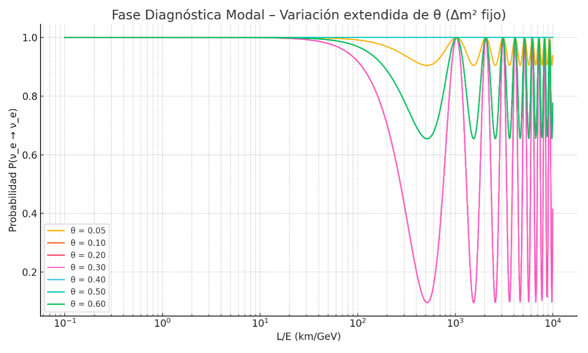
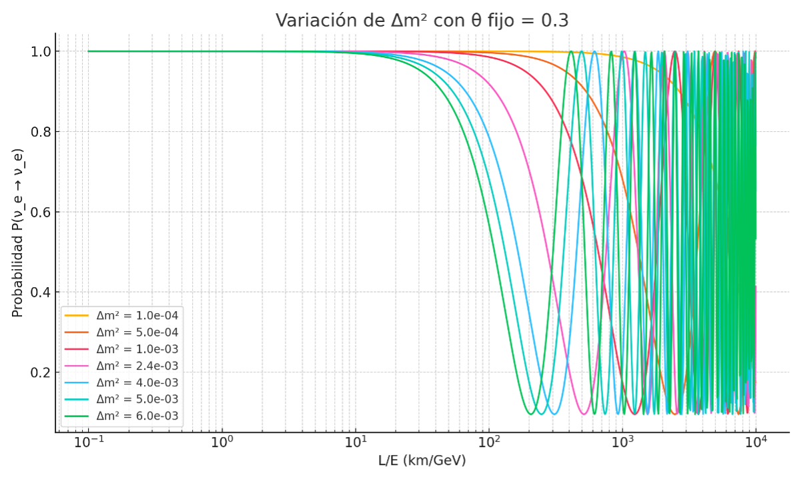
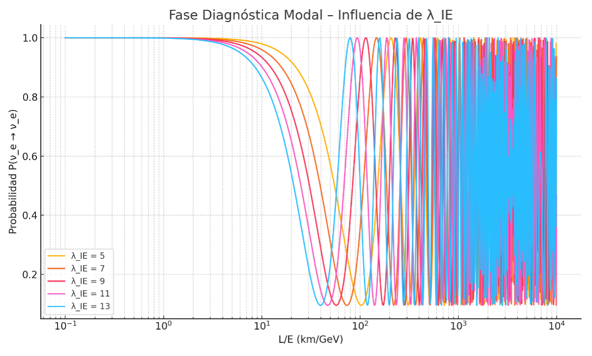

This section introduces the diagnostic phase of the IE Model applied to neutrino behavior. Instead of classical flavor oscillations, the model describes transitions between energy modes defined by internal parameters and modal configurations.
The IE Model interprets neutrino phenomena as reorganizations within a discrete modal structure. These transitions depend on the energy mode spectrum and not on particle identity or mass eigenstates.
The probability function for modal transitions follows:
P(μ → e) = sin²(2θ) · sin²(Δm² · L / 4E)
This expression emerges from the internal eigenvalue structure of the remnant, with L representing the iterated path and E the modal energy.
We analyze the behavior of P(μ → e) under variations of θ, Δm², and λ_IE.
Figure 7.1.1: Oscillation patterns for different θ values
Figure 7.1.2: Influence of Δm² on modal transition probability
Figure 7.1.3: Variation of λ_IE and its effect on oscillation depth
Each modal parameter plays a distinct role:
The diagnostic phase demonstrates that the IE Model can recreate oscillation patterns observed in neutrino physics using an internal modal language. This sets the foundation for comparison with experimental data from solar, atmospheric, and reactor neutrino observations in upcoming sections.